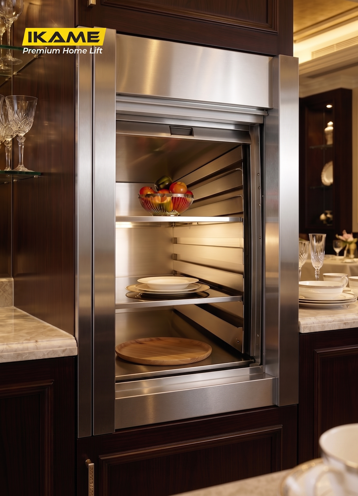

IKAME Dumbwaiter Elevator menggunakan sistem kontrol komputer penuh yang mengintegrasikan microcomputer control, sistem modular, dan program self-inspection canggih. Sistem ini jauh lebih unggul dan berbeda dari sistem electric hoist konvensional yang umum ditemukan di pasaran.
Rincian teknis untuk perencanaan instalasi Tray Type Food Elevator di proyek Anda.
| Parameter | Deskripsi / Nilai Spesifikasi |
|---|---|
| Tipe Lift | Tray Type Food Elevator / Dumbwaiter |
| Kontrol Utama | Full computer control - microcomputer + modular system + self-inspection |
| Footprint / Ruang Mesin | Kecil, tidak memerlukan ruang mesin (no room required) |
| Konfigurasi Standar | Fleksibel sesuai kebutuhan. Dimensi referensi shaft 600x600 mm / lubang akses 500x400 mm |
| Tinggi Travel Referensi | 3048 mm (dapat disesuaikan dengan tinggi lantai bangunan) |
| Stabilitas Operasional | Operasional stabil, low noise (rendah kebisingan), dan sistem otomatis penuh |
| Aplikasi Penggunaan | Restoran, hotel, dapur rumah tinggal, klinik/rumah sakit kecil |
| Layanan Purna Jual | Factory direct sales, dukungan after-sales 24 jam penuh |

Desain bukaan pintu tengah atas-bawah (Bi-Parting) untuk menghemat ruang koridor secara maksimal.
Akses setinggi pinggang yang sejajar dengan meja persiapan. Sangat ergonomis dan higienis untuk restoran, kafe, atau dapur bersih rumah tinggal guna mentransfer makanan piringan.
Akses pintu yang sejajar persis dengan lantai dasar. Ideal digunakan untuk memindahkan barang berat, troli, atau kebutuhan pada rumah sakit dan logistik hotel.


Hubungi tim kami untuk konsultasi dimensi ukuran shaft (lubang akses) serta perhitungan kapasitas yang paling sesuai untuk bangunan Anda.
Konsultasi Dumbwaiter Sekarang